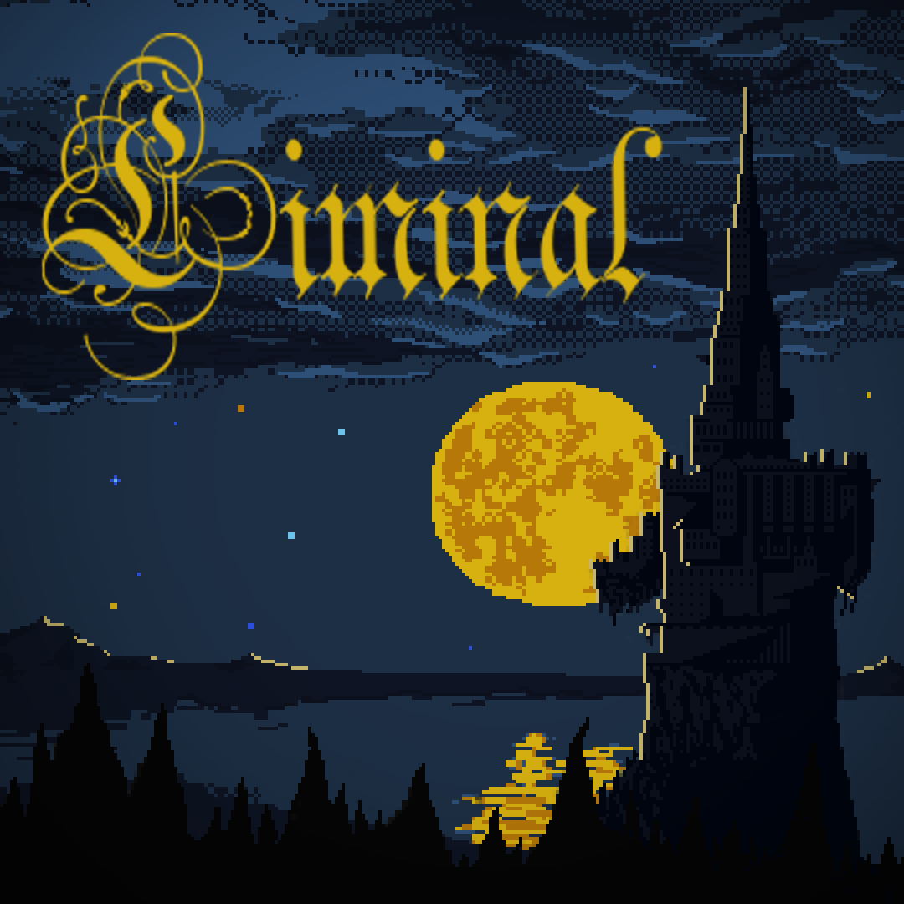

MMP1 Game
Liminal ist ein Pixel, Text Based, Autofighter, RPG Game. Durch die Entscheidungen des Spielers verändern sich die Werte deines Charakters und die Geschehnisse der Welt. Das Spiel basiert auf ein simples Node System an Szenarien und Handlungssträngen zwischen denen durch Entscheidungen in Dialogen oder im Kampf gewechselt werden kann. So hat das Spiel mehrere Wege, die man als Spieler einschlagen kann. Was einen großen Wiederspielwert garantiert. Zudem hat das Spiel einen RPG artigen Survival Aspekt (Attribute und Heiltrank Management), da der Turm ist voller Monster, Fallen und Geheimnissen ist.
Liminal war mein erstes eigenständiges Game-Projekt und auch gleichzeitig mein Abschlussprojekt für das 2. Semester an der Fachhochschule. Da wir auch keine Engine benutzen durften, die Visual Scripting ermöglicht, habe ich mich für das C# Monogame Framework entschieden. Es stellte die grundlegende Engine Architektur zur Verfügung, aber machte es mir nicht zu einfach. Doch mithilfe von Google und Trial-and-Error Coding konnte ich das Spiel rechtzeitig fertigstellen.
Die Grafik des Spiels wurde nicht benotet, dennoch war es mir sehr wichtig für das Spiel eine stimmige Atmosphäre und Grafik zu schaffen. Also setzte ich mich Abends in meiner Freizeit hin und malte alle Assets und Animationen für das Spiel. Durch vorherige Programmierprojekte (Game Jams) an denen ich regelmäßig teilnehme, kenne ich einige Leute aus verschiedensten Bereichen der Spiele / Softwareentwicklung. So fand ich schnell jemanden der mir einen Soundtracks für das Spiel und den Title Screen machte. Und das Spiel war fertig! Disclaimer: Der Text in dem Adventure wurde nicht benotet und die Zeit war knapp, also wurde nicht sehr viel Zeit in ihn investiert!